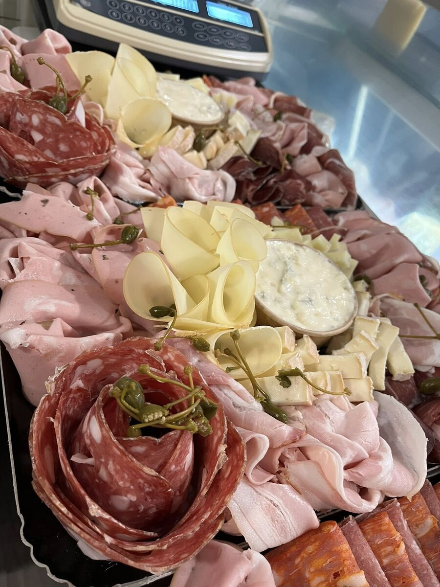
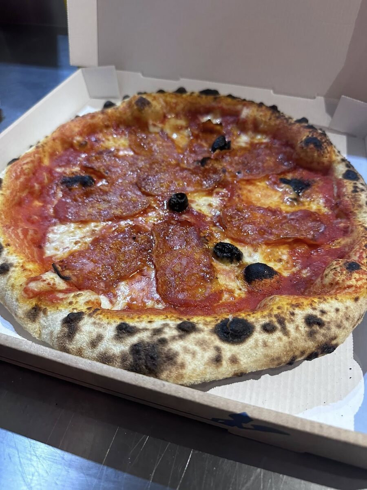
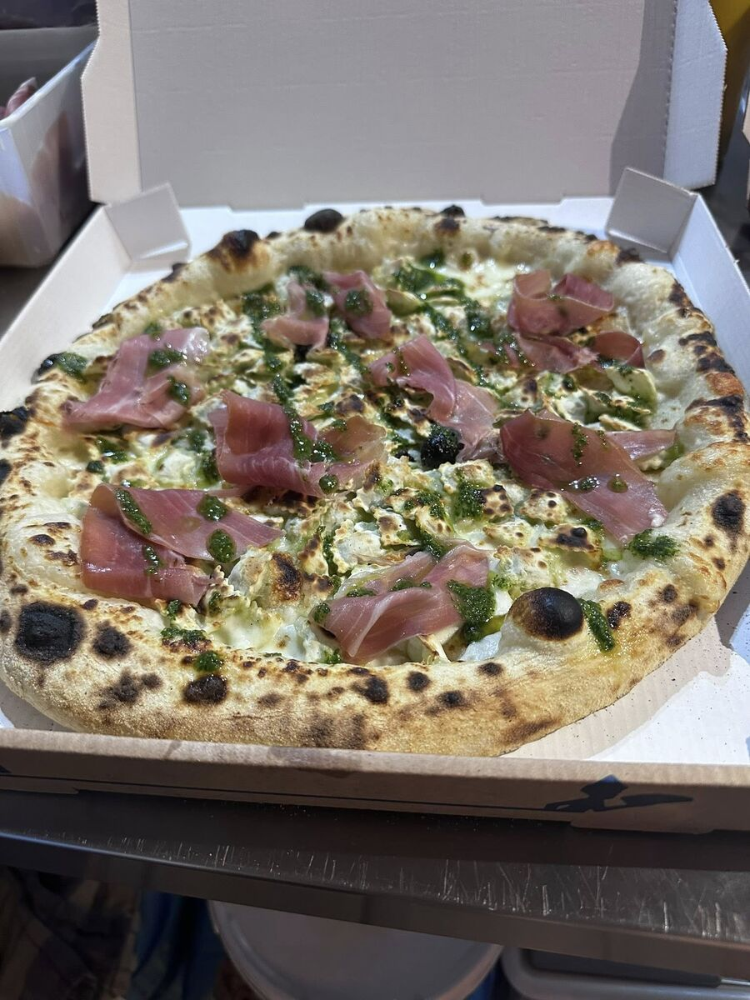
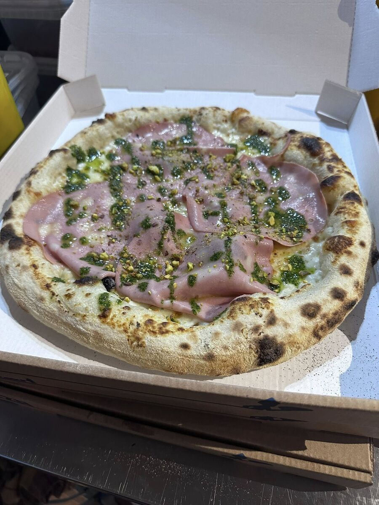

De la Sicile au Vaucluse — une histoire de passion

Tony est né en Sicile, bercé par les saveurs de sa terre natale. Formé aux traditions culinaires siciliennes, il a grandi entre les marchés de Palerme, les oliveraies et les recettes transmises de génération en génération.
Avec Cindy, ils partagent une même vision : offrir une cuisine italienne authentique, sans compromis sur la qualité des produits. Ensemble, ils ont créé CasaMia pour partager cette passion avec le Vaucluse.
CasaMia, c'est « chez moi » en italien. Plus qu'un nom, c'est une promesse : celle de vous accueillir comme à la maison, dans la chaleur et la générosité de la tradition sicilienne.
Chaque produit est sélectionné avec soin. La farine de blé dur, les tomates San Marzano, l'huile d'olive extra-vierge, la charcuterie artisanale... Tout est importé directement de Sicile pour garantir un goût inimitable.
De la pâte pétrie à la main aux desserts faits maison, chaque assiette raconte un morceau de notre histoire.

Un chef né en Sicile, des recettes transmises de génération en génération, des produits importés directement d'Italie. Chez CasaMia, rien n'est approximatif.
Farine de blé dur sicilienne, tomates San Marzano, mozzarella Fior di Latte, huile d'olive extra-vierge... Chaque ingrédient est choisi pour son excellence.
CasaMia, c'est avant tout une famille. Tony et Cindy vous accueillent avec le sourire, la générosité et la convivialité qui font l'âme de la cuisine italienne.



Poussez la porte de CasaMia et laissez-vous transporter en Sicile. Tony et Cindy vous attendent avec le sourire.